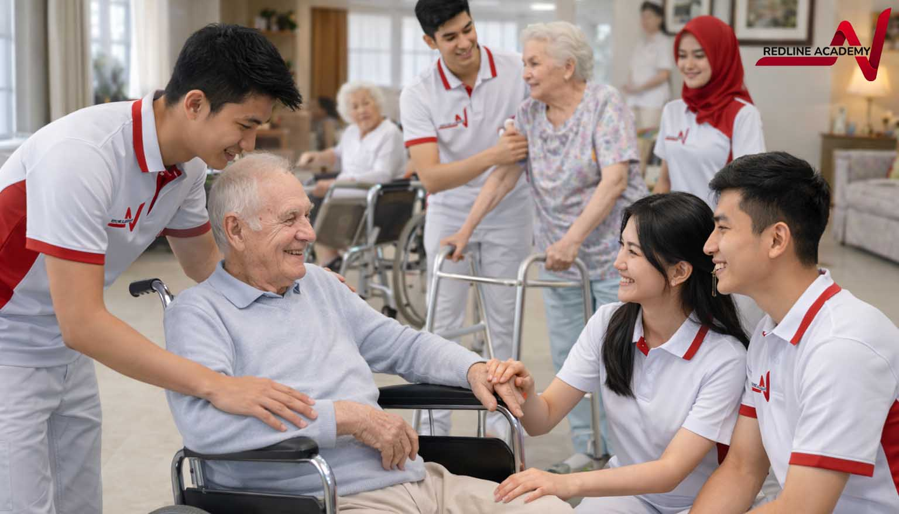

Pelatihan Caregiver Indonesia: Mengapa Standar Australia Mengubah Segalanya
Caregiver Indonesia kuat. Yang dibutuhkan adalah credential yang diakui dunia.

Peta artikel caregiver Redline
Mulai dari memahami program, lanjut ke riset credential, bandingkan lembaga, lalu masuk ke panduan pendaftaran. Empat halaman ini disusun sebagai keyword cluster yang saling menguatkan.
Apa Itu Pelatihan Caregiver, dan Mengapa Ini Penting Sekarang?
Indonesia sedang berdiri di persimpangan sejarah. Di satu sisi, populasi lansia Indonesia tumbuh lebih cepat dari kapasitas perawatan yang tersedia. Lebih dari 11,7 persen penduduk Indonesia kini berusia di atas 60 tahun, dan angka ini akan terus meningkat. Di sisi lain, dunia sedang mencari apa yang justru sangat melimpah di Indonesia: tenaga caregiver yang terampil, penuh empati, dan siap bekerja secara profesional.
Pelatihan caregiver adalah proses membangun kompetensi yang dibutuhkan untuk merawat lansia, penyandang disabilitas, dan orang dengan gangguan kesehatan mental secara profesional, aman, dan bermartabat. Ini bukan sekadar belajar cara memandikan atau membantu mobilisasi. Ini adalah pembangunan profesi yang lengkap, mencakup komunikasi, dokumentasi, etika kerja, keselamatan klien, dan kesiapan bekerja di lingkungan internasional.
Redline Academy hadir sebagai lembaga pelatihan caregiver Indonesia pertama yang mengadopsi standar Australian National Microcredentials Framework (NMF), kerangka kualifikasi yang digunakan oleh tenaga aged care profesional di Australia. Bukan karena Australia lebih penting dari Indonesia, tetapi karena standar ini termasuk yang paling diakui secara internasional di kawasan Asia-Pasifik, dan lulusan kami berhak mendapatkan credential yang bisa dibaca oleh pemberi kerja di Jepang, Australia, Taiwan, dan Eropa.


Mengapa Pelatihan Caregiver di Indonesia Berbeda dengan Kursus Biasa?
Ada banyak lembaga yang menawarkan kursus caregiver di Indonesia. Sebagian besar mengajarkan keterampilan dasar dan mengeluarkan sertifikat BNSP. Itu baik karena BNSP adalah standar nasional yang penting. Tetapi ketika seorang lulusan membawa sertifikat BNSP ke fasilitas perawatan di Osaka atau Melbourne, manajer SDM di sana tidak memiliki konteks untuk mengevaluasinya. Arsitektur dokumentasinya tidak dikenal di luar Indonesia.
Inilah perbedaan yang Redline Academy buat.
- Setiap micro credential mendokumentasikan learning outcomes yang terukur dan dinilai, bukan hanya jam kehadiran.
- Setiap credential mencantumkan domain kompetensi secara spesifik: personal care, mobility support, medication management, komunikasi, dan dokumentasi.
- Setiap credential dapat diverifikasi secara digital dalam 60 detik oleh pemberi kerja di mana pun di dunia.
- Kurikulum selaras dengan persyaratan SSW Kaigo Jepang, NDIS Quality Framework Australia, dan WHO Health Worker Competency Standards.
Jika Anda ingin melihat bagaimana nilai credential ini dibandingkan dengan sertifikat biasa, lanjutkan ke Kursus Caregiver Bersertifikat. Jika Anda ingin membandingkan kualitas penyelenggara, baca juga Lembaga Pelatihan Caregiver.
Siapa yang Bisa Mengikuti Pelatihan Caregiver Indonesia di Redline Academy?
Redline Academy menerima peserta usia 17 hingga 55 tahun. Tidak ada persyaratan gelar sarjana. Yang kami cari adalah tiga hal: kemampuan merawat, minat yang tulus terhadap pekerjaan care, dan sikap profesional yang bisa dikembangkan.
Usia 17-25: Generasi pertama yang benar-benar siap
Baru lulus SMA atau SMK? Kamu tidak perlu menunggu gelar sarjana untuk memulai karier yang bermakna dan diakui dunia. Jika kamu suka membantu orang, sabar, dan punya empati alami, kamu sudah memiliki pondasi yang paling penting. Redline Academy membangun sisanya.
Usia 26-40: Karier baru yang punya nilai internasional
Sudah bekerja tapi merasa kurang bermakna? Atau sudah bertahun-tahun merawat anggota keluarga dan ingin mengubah pengalaman itu menjadi karier profesional? Micro Credential Redline Academy bisa diselesaikan dalam hitungan bulan, bukan tahun, dan langsung membuka pintu ke pasar kerja internasional.
Usia 41-55: Pengalaman hidupmu adalah modal terbesar
Sudah puluhan tahun menjadi kader posyandu, mendampingi orang tua di rumah, atau menjadi andalan komunitas dalam situasi sulit? Pengalamanmu sudah jauh lebih dari cukup untuk menjadi caregiver profesional. Yang kamu butuhkan hanya satu hal: credential yang bisa dibaca dunia. Kami menyediakannya.
Gotong royong bukan hanya nilai budaya. Itu adalah deskripsi paling tepat dari apa yang caregiver profesional lakukan setiap hari.
Karena itu, Redline Academy menempatkan standar global tanpa melepas hati Indonesia sebagai dasar desain kurikulum dan pengalaman belajar.
Tiga Jalur Program di Redline Academy
- Aged Care Support - Perawatan lansia dan demensia, selaras dengan persyaratan SSW Kaigo Jepang dan Support at Home Australia.
- Disability Support - Pendampingan penyandang disabilitas dengan pendekatan person-centred practice selaras NDIS.
- Mental Health First Aid in Care Settings - Pendampingan klien dengan gangguan kesehatan mental, sesuai WHO Mental Health Action Plan.

Mengapa Memilih Redline Academy?
Satu-satunya lembaga pelatihan caregiver Indonesia dengan credential yang diselaraskan ke Australian National Microcredentials Framework.
Credential dapat diverifikasi secara digital, transparan, dan dipercaya oleh pemberi kerja internasional.
NMF untuk pengakuan internasional dan jalur menuju BNSP untuk pengakuan domestik.
Usia 17-55, tanpa syarat gelar, dan dapat diselesaikan dalam hitungan bulan.
Ada jalur jelas ke Jepang, Australia, Taiwan, dan Korea melalui credential yang dipahami employer di negara tujuan.
Setelah memahami program, Anda bisa lanjut ke halaman credential, perbandingan lembaga, dan panduan daftar untuk mengambil keputusan lebih cepat.
FAQ Pelatihan Caregiver Indonesia
Apa itu pelatihan caregiver Indonesia?
Pelatihan caregiver Indonesia adalah proses membangun kompetensi profesional untuk merawat lansia, penyandang disabilitas, dan orang dengan gangguan kesehatan mental secara aman, bermartabat, dan siap kerja.
Siapa yang bisa mengikuti program ini?
Redline Academy menerima peserta usia 17 hingga 55 tahun tanpa syarat gelar sarjana. Yang penting adalah minat pada pekerjaan care, empati, dan kesiapan mengembangkan sikap profesional.
Mengapa standar Australia penting?
Karena credential yang selaras dengan Australian NMF lebih mudah dipahami dan diverifikasi oleh pemberi kerja internasional, sehingga membantu menutup recognition gap yang sering dialami caregiver Indonesia.
Lanjutkan perjalanan riset Anda
Redline caregiver article map
Start by understanding the program, continue to credential research, compare institutions, and then move to the enrolment guide. These four pages are structured as an interconnected keyword cluster.
What Is Caregiver Training, and Why Does It Matter Now?
Indonesia is standing at a historic crossroads. On one side, the elderly population is growing faster than the country's available care capacity. More than 11.7 percent of Indonesians are now over the age of 60, and that number will continue to rise. On the other side, the world is searching for what Indonesia already has in abundance: skilled, empathetic, and professionally ready caregivers.
Caregiver training is the process of building the competencies required to support older adults, people with disabilities, and clients with mental health conditions in a professional, safe, and dignified way. It is not merely about learning how to bathe someone or assist with mobility. It is the construction of a full profession that includes communication, documentation, work ethics, client safety, and readiness for international care environments.
Redline Academy operates as the first caregiver training institution in Indonesia to adopt the Australian National Microcredentials Framework. This standard is among the most internationally legible across the Asia-Pacific region, and our graduates are eligible to receive credentials that employers in Japan, Australia, Taiwan, and Europe can understand.


Why Is Caregiver Training in Indonesia Different from an Ordinary Course?
There are many institutions that offer caregiver courses in Indonesia. Most of them teach basic skills and issue BNSP certificates. That is valuable because BNSP is an important domestic standard. But when a graduate brings a BNSP certificate to a care facility in Osaka or Melbourne, the hiring manager there often has no context for evaluating it. The documentation architecture is simply not familiar outside Indonesia.
- Every micro credential documents measurable and assessed learning outcomes, not attendance hours alone.
- Every credential lists specific competency domains such as personal care, mobility support, medication management, communication, and documentation.
- Every credential can be digitally verified within 60 seconds by employers anywhere in the world.
- The curriculum aligns with Japan's SSW Kaigo requirements, Australia's NDIS Quality Framework, and the WHO Health Worker Competency Standards.
If you want to see how this compares with a regular certificate, continue to Certified Caregiver Course. If you want to compare institution quality, also read Caregiver Training Institution.
Who Can Join Redline Academy's Caregiver Training Pathway?
Redline Academy accepts learners aged 17 to 55. There is no bachelor's degree requirement. What matters most is sincere interest in care work, empathy, and a professional attitude that can grow.
Ages 17-25
You do not need to wait for a university degree to begin a meaningful and globally respected career. If you enjoy helping people and carry natural empathy, you already have the most important foundation.
Ages 26-40
If you want a more meaningful new career, or you have spent years caring for family members, Redline Academy's micro credentials can help convert that care experience into a professional pathway.
Ages 41-55
Your life experience may already be enough to become a professional caregiver. What you need is a credential the world can read.
Mutual care is not just a cultural value. It is the most accurate description of what professional caregivers do every day.
That is why Redline Academy places global standards without abandoning Indonesian care values at the centre of its curriculum and learning design.
Three Program Pathways at Redline Academy
- Aged Care Support - Older adult care and dementia support aligned with Japan's SSW Kaigo expectations and Australia's Support at Home direction.
- Disability Support - Support for people with disabilities through a person-centred practice model aligned with NDIS.
- Mental Health First Aid in Care Settings - Support for clients with mental health conditions in line with the WHO Mental Health Action Plan.
Why Choose Redline Academy?
The only caregiver training institution in Indonesia with credentials aligned to the Australian National Microcredentials Framework.
Credentials can be digitally verified, creating trust and transparency for international employers.
NMF for international legibility and a pathway toward BNSP for domestic recognition.
Open to ages 17-55, no degree requirement, and designed to be completed in months.
There are realistic pathways toward Japan, Australia, Taiwan, and Korea through credentials employers in those destinations can understand.
After understanding the program, you can continue to the credential page, the institution comparison page, and the application guide for faster decision-making.
Siap Mulai Karier Caregiver?
Hubungi tim Redline Academy untuk konsultasi program dan jalur belajar yang sesuai kebutuhan Anda.
Konsultasi Sekarang